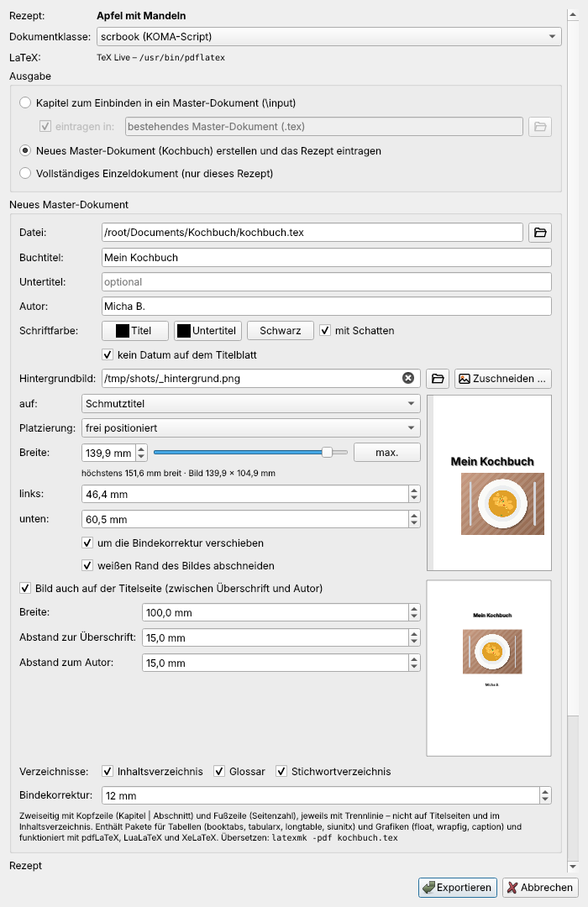
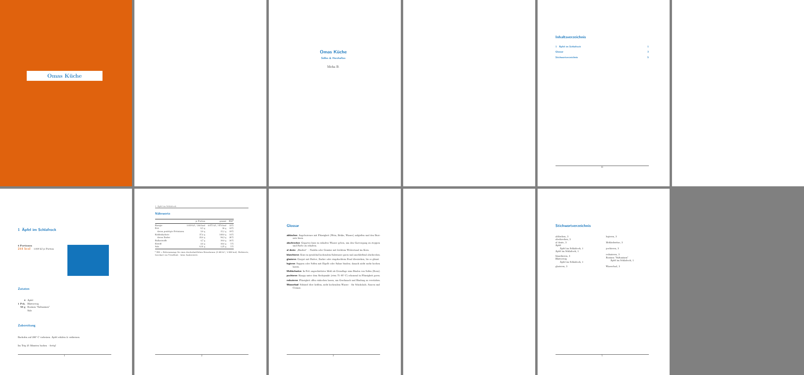
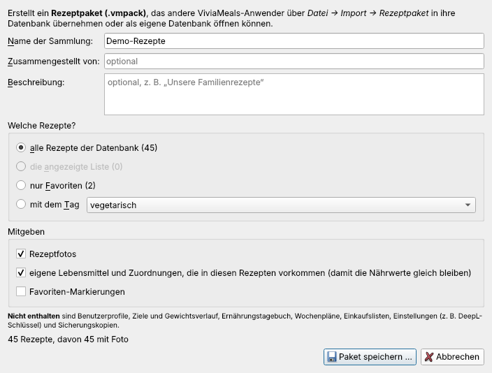
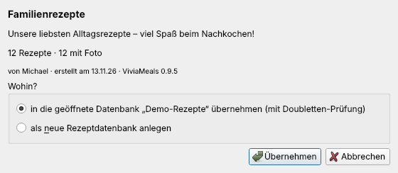

Exportieren
Alle Exporte finden Sie unter Datei → Export. Einzelne Rezepte lassen sich außerdem über das Kontextmenü der Rezeptliste (rechte Maustaste) exportieren.
Als Website
Datei → Export → Als Website exportieren … erzeugt aus Ihrer Sammlung eine themenbasierte Website (HTML5 mit PHP-Suche), die Sie nur noch auf Ihren Webspace hochladen müssen.
- Titel der Website, Untertitel und Autor/Betreiber erscheinen im Kopf und im Impressum-Hinweis.
- Umfang: alle Rezepte oder nur die Rezepte der aktuell angezeigten (gefilterten) Liste.
- Nährwerte anzeigen, Zielordner, Nach dem Export im Browser öffnen.
Die Website enthält eine Startseite, eine Seite je Thema (Tag) und je Rezept – mit Foto und Nährwerten –, ein Menü und eine Suche: sofort im Browser (JavaScript) und auf dem Server (suche.php, PHP 7.4 oder neuer). Das Layout passt sich Handys und Tablets an. Zum Veröffentlichen laden Sie den Inhalt des Zielordners per FTP oder SFTP auf Ihren Webspace.
Als LaTeX-Datei und Kochbuch
Datei → Export → Als LaTeX-Datei exportieren … (F2) erzeugt aus dem ausgewählten Rezept eine LaTeX-Datei – für ein eigenes, gesetztes Kochbuch. Der Befehl ist nur aktiv, wenn eine LaTeX-Installation gefunden wird (TeX Live, MiKTeX oder MacTeX); der Tooltip nennt die gefundene Installation.

Ausgabe
- Kapitel zum Einbinden in ein Master-Dokument (Vorgabe). Mit „eintragen in“ schreibt ViviaMeals
\input{rezepte/<datei>}in das gewählte Master-Dokument – vor die Zeile% ViviaMeals: weitere Rezepte hier, sonst vor\backmatterbzw.\end{document}. Steht das Rezept schon darin, wird nichts doppelt eingetragen. - Neues Master-Dokument (Kochbuch) erstellen und das Rezept eintragen – siehe unten.
- Vollständiges Einzeldokument – nur dieses Rezept.
Rezept-Optionen: Foto, Nährwerttabelle, Quelle angeben (Vorgabe aus), Stichwörter für das Stichwortverzeichnis. Einbinden als eigenes Kapitel (\chapter) oder als Abschnitt in einem Themen-Kapitel (\section) – etwa „Vorspeisen“, „Hauptgerichte“, „Süßspeisen“. ViviaMeals schlägt ein passendes Kapitel vor und legt es bei Bedarf im Master-Dokument an.
Ein neues Kochbuch
Für ein neues Master-Dokument (kochbuch.tex) wählen Sie:
- Dokumentklasse scrbook (KOMA-Script) oder book,
- Buchtitel, Untertitel und Autor (Vorgabe: Standard-Quelle), auf Wunsch ohne Datum,
- Schriftfarbe für Titel und Untertitel (Vorgabe Schwarz) und einen Schatten,
- ein Hintergrundbild für Schmutztitel oder Titelseite – ganze Seite, waagerecht mittig oder frei positioniert, zuschneidbar und stufenlos skalierbar; auf Wunsch zusätzlich auf der Titelseite zwischen Überschrift und Autor,
- Inhaltsverzeichnis, Glossar, Stichwortverzeichnis und die Bindekorrektur (Vorgabe 12 mm für Ringbindung).
Das Buch ist zweiseitig gesetzt, mit Kopfzeile (Kapitel und Abschnitt, Linie darunter) und Fußzeile (Seitenzahl, Linie darüber); Titelseiten bleiben ohne beides. Vor dem Hauptteil steht ein Vorwort (vorwort.tex), das ViviaMeals einmal anlegt und danach nie überschreibt – schreiben Sie dort Ihren eigenen Text hinein. Danach merkt sich ViviaMeals das Master-Dokument; weitere Rezepte werden dort eingetragen.

Übersetzen: latexmk -pdf kochbuch.tex im Ordner des Master-Dokuments (oder dreimal pdflatex). Glossar und Stichwortverzeichnis brauchen keine Zusatzprogramme.
Als LibreOffice-Writer-Datei
Datei → Export → Als LibreOffice-Writer-Datei (.odt) exportieren … speichert das ausgewählte Rezept als Textdokument (A4) – mit der gerade eingestellten Portionenzahl. Titel, rechts daneben das Foto (der Text fließt links vorbei), Portionen, Energie, Tags, Zutaten, Zubereitung, Nährwerttabelle und Quelle; in der Fußzeile Rezepttitel und „Seite x von y“. Die Datei lässt sich in LibreOffice, OpenOffice und Microsoft Word öffnen und weiterbearbeiten.
Menükarten mit mehreren Rezepten erstellt der Menüassistent.
Rezeptpakete weitergeben
Datei → Export → Rezeptdatenbank weitergeben (.vmpack) … packt Rezepte zum Weitergeben an andere ViviaMeals-Nutzer – etwa die Familienrezepte für die Kinder.

- Welche Rezepte? alle Rezepte, die angezeigte Liste, nur Favoriten oder Rezepte mit einem Tag.
- Name der Sammlung, Beschreibung und Zusammengestellt von (optional).
- Mitgeben: Rezeptfotos (Vorgabe ja), eigene Lebensmittel und Zuordnungen, die in den Rezepten vorkommen – damit beim Empfänger dieselben Nährwerte herauskommen (ja), Favoriten-Markierungen (nein).
Nie enthalten sind Profile, Ziele, Gewichtsverlauf, Tagebuch, Wochenpläne, Einkaufslisten und Einstellungen (auch nicht der DeepL-Schlüssel).
Ein Paket übernehmen: Datei → Import → Rezeptpaket (.vmpack) übernehmen … oder Doppelklick auf die Datei. Die Vorschau zeigt Name, Beschreibung, Absender und Anzahl der Rezepte. Das Paket lässt sich in die geöffnete Datenbank übernehmen (mit Doubletten-Prüfung) oder als neue Rezeptdatenbank anlegen. Eigene Lebensmittel des Pakets werden ergänzt, ohne vorhandene zu verändern.

Ein Rezeptpaket ist ein gewöhnliches ZIP-Archiv – es lässt sich auch mit jedem Entpackprogramm öffnen.